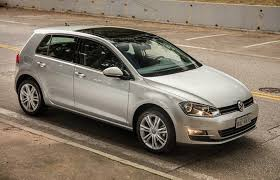
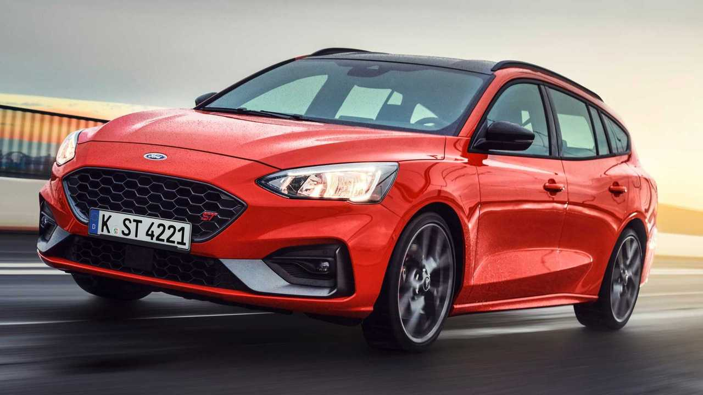

Nossos Produtos
-

Carro 1 - Volkswagen Golf 1.6
Descrição do carro 1: O Volkswagen Golf 1.6 é um carro compacto e econômico, ideal para cidade. Possui motor 1.6 litros, 4 cilindros, e transmissão manual de 5 marchas.
- Preço: R$ 50.000,00
- Ano: 2020
- Kilometragem: 20.000 km
- Cor: Prata
-

Carro 2 - Ford Focus 2.0
Descrição do carro 2: O Ford Focus 2.0 é um carro compacto e esportivo, ideal para quem procura um carro com desempenho e economia. Possui motor 2.0 litros, 4 cilindros, e transmissão automática de 6 marchas.
- Preço: R$ 70.000,00
- Ano: 2022
- Kilometragem: 10.000 km
- Cor: Vermelho
-

Carro 3 - Toyota Corolla 1.8
Descrição do carro 3: O Toyota Corolla 1.8 é um carro sedã e confortável, ideal para famílias. Possui motor 1.8 litros, 4 cilindros, e transmissão automática de 6 marchas.
- Preço: R$ 90.000,00
- Ano: 2021
- Kilometragem: 30.000 km
- Cor: Branco